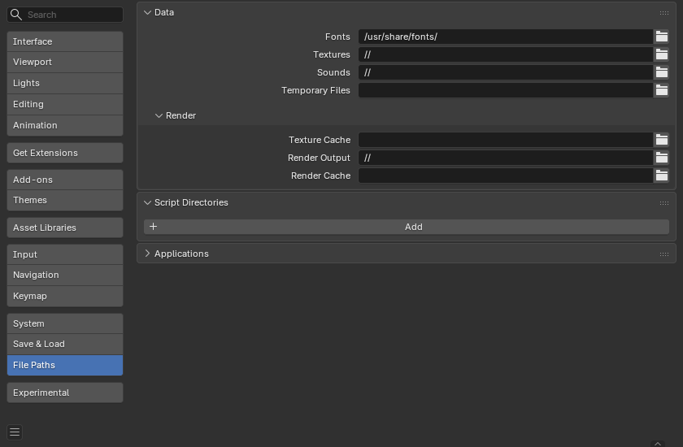

File Paths¶
Phần File trong Preferences cho phép bạn cấu hình tùy chỉnh tự động lưu và đặt các đường dẫn file mặc định cho blend-file, hình ảnh đã render, v.v.
Vị trí cho nhiều loại file ngoài khác nhau có thể được đặt cho các tùy chọn sau:

Phần File Paths trong Preferences.¶
Gợi ý
Đường dẫn mặc định // chỉ đến thư mục của blend-file đang mở (xem Đường dẫn Tương đối để biết chi tiết).
Data¶
- Fonts
Vị trí mặc định để duyệt tìm các file font của text object.
- Textures
Vị trí mặc định để duyệt tìm texture hình ảnh.
- Sounds
Vị trí mặc định để duyệt tìm các file âm thanh.
- Temporary Files
Thư mục để lưu các file tạm thời. Đường dẫn phải trỏ đến một thư mục đang tồn tại, nếu không nó sẽ bị bỏ qua và thư mục tạm của hệ thống sẽ được dùng thay thế. Khi để trống, thư mục tạm của hệ thống sẽ được dùng (xem Thư mục tạm để biết chi tiết).
Render¶
- Render Output
Nơi các hình ảnh/video đã render được lưu.
- Render Cache
Vị trí lưu trữ các hình ảnh render đã được cache.
- Texture Cache
Thư mục để lưu các file cache texture
.tx, tương đối so với file hình ảnh nguồn hoặc dưới dạng đường dẫn tuyệt đối. Được dùng bởi Texture Cache của Cycles.
Script Directories¶
Các vị trí bổ sung để tìm kiếm script Python.
Mỗi đường dẫn có thể được đặt một Name để biểu thị mục đích của thư mục script đó.
Theo mặc định, Blender tìm script trong vài thư mục (tùy nền tảng). Bằng cách thêm một đường dẫn script người dùng trong tùy chỉnh, một thư mục bổ sung sẽ được dùng. Nó có thể được dùng để lưu script và add-on riêng của bạn độc lập với phiên bản Blender hiện tại.
Bạn cần tạo các thư mục con cụ thể trong đường dẫn này khớp với cấu trúc của thư mục scripts nằm trong thư mục cài đặt của Blender.
Các thư mục con sau sẽ được dùng khi tồn tại:
startup/Các module trong thư mục này sẽ được import khi khởi động.
addons/Các add-on kiểu cũ đặt ở đây sẽ được liệt kê trong tùy chỉnh add-on.
modules/Các module trong thư mục này có thể được import bởi các script khác.
presets/Các preset trong thư mục này sẽ được thêm vào các preset hiện có.
Gợi ý
Đối với add-on, giờ đây khuyến nghị dùng một kho extension cục bộ nếu bạn muốn xác định các vị trí bổ sung để cài đặt và quản lý chúng.
Để sử dụng những thứ này, bạn cần định nghĩa chúng là các extension.
Ghi chú
Bạn phải khởi động lại Blender để mọi thay đổi đối với script của người dùng có hiệu lực.
Applications¶
- Image Editor
Đường dẫn đến một chương trình ngoài dùng để chỉnh sửa hình ảnh.
- Animation Player
Chương trình dùng để phát lại các animation đã render qua View Animation.
Theo mặc định, tùy chọn này đặt thành Internal, dùng trình phát animation tích hợp sẵn của Blender.
Ưu điểm là mọi định dạng hình ảnh được Blender hỗ trợ đều có thể phát lại và không cần cài ứng dụng bên thứ ba nào.
Text Editor¶
- Program
Lệnh để khởi chạy trình soạn thảo văn bản khi dùng Edit Externally, hoặc là đường dẫn đầy đủ hoặc là một lệnh nằm trong
$PATH. Để trống để dùng trình soạn thảo tích hợp.
- Arguments
Định nghĩa định dạng cụ thể của các tham số mà trình soạn thảo văn bản dùng để mở file.
Các phần mở rộng được hỗ trợ như sau:
$filepath: Đường dẫn tuyệt đối của file.$line: Dòng cần mở tại đó (Tùy chọn).$column: Cột cần mở tính từ đầu dòng (Tùy chọn).$line0&$column0tương tự như trên nhưng bắt đầu từ số không.
Ví dụ:
-f $filepath -l $line -c $column
Development¶
Chỉ hiển thị khi Developer Extras được bật.
- I18n Branches
Đường dẫn đến thư mục
/branchescủa bản dịch SVN cục bộ của bạn, để cho phép dịch ngay từ giao diện.
Hạn chế đã biết¶
Quyền trên Windows¶
Hãy đảm bảo bạn có đủ quyền cần thiết để chạy file thực thi truy cập đường dẫn đã định. Chẳng hạn trên Windows, nếu tùy chọn "Run this program as an administrator" được bật cho file thực thi, việc mở trình soạn thảo sẽ thất bại do một giới hạn trong cơ chế User Account Control của hệ điều hành. Chạy chương trình với quyền nâng cao là nguy hiểm tiềm ẩn!